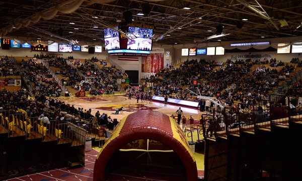

Kessler's Grocery Store
Kessler's is my first job and I have been there for about 4 years and it taught me many of things which are how to work as a team, communication skills and multi-tasking and most recently I was allowed to operate the forklift and box truck in order to help with daily operations.
June 2016 - December 2020
Kessler's Grocery Store Website
Sports Fliming for NSU
I got this job at Northern because of my passion for it in high school. While this job, I have done pretty much the basic part of it from setting up the equipment to fliming games. Although my future for advancements through this job is high up there and it has allowed me to work on communication skills when coordinating my placement of my camera to multi-tasking during the game.
January 2020 - March 2022
Tech Fellowship for NSU
I obtain this job as a way to get into the career side of technology. The job helps me do critical thinking in order to help solve computer and tech related problems ranging from software support to hardware support. We also have to wipe computer as well as make update to facility and students computers.
August 2022 - Present
Northern State University Website
Outside Yard TM & Load Builder for Menards
I was able to obtain a job at Menards in December 2020. When I working in the outside yard, my main goal was to help customer find their products as well as take care of putting away product including lumber, drywall etc via a forklift. After about a year, I transfered over to being a load builder and I am in charge of building customer delivers as well as locate, find and log customer special orders into our databases.
December 2020 - Present